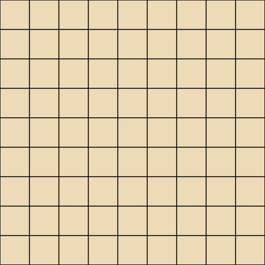
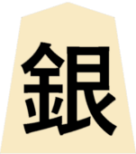
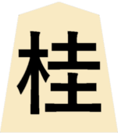
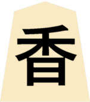
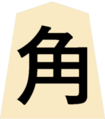
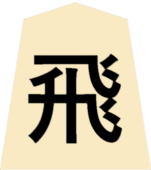
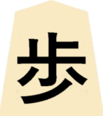

Shogi:O xadrez japonês
O tabuleiro
O tabuleiro do shogi, assim como o do xadrez é dividido em casas, mas no xadrez o tabuleiro tem 8 colunas e 8 fileiras,
já no tabuleiro de shogi o número de colunas e fileiras aumanta para 9.
Peças
-
General de Ouro

-
Rei

- General de Prata 
- Cavalo 
- Lança 
- Bispo 
- Torre 
- Peão 
Onde surgiu?
O shogi, conhecido como xadrez japonês surgiu exatamente onde o nome sugeri no Japão